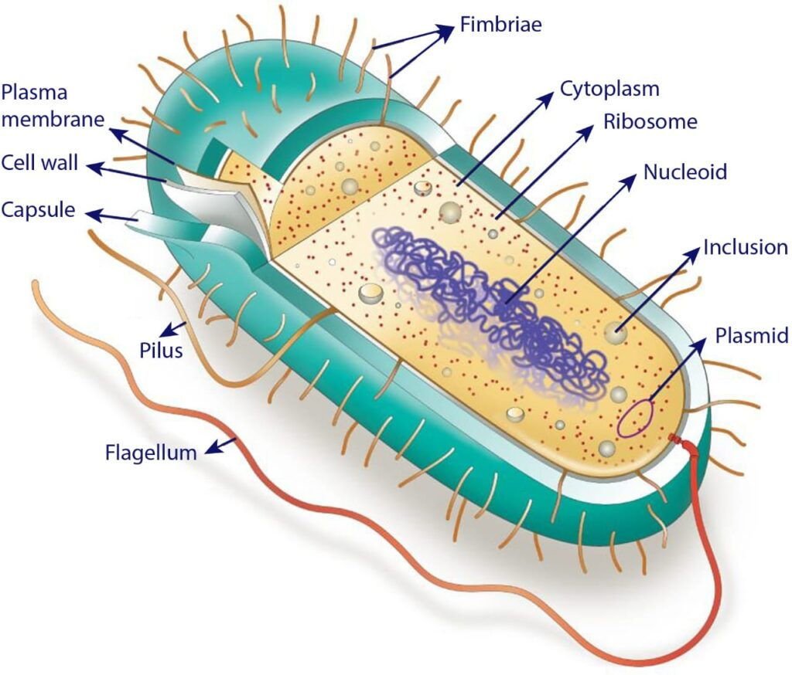

Archaea are a diverse group of single-celled microorganisms belonging to the domain Archaea. They are distinct from bacteria and eukaryotes in terms of their genetic, biochemical, and physiological characteristics. Archaea inhabit a wide range of environments, from extreme habitats such as hot springs and deep-sea vents to more moderate environments like soil, water, and the human body.
Key Characteristics
- 1. Prokaryotic Structure: Like bacteria, archaea are prokaryotic organisms, meaning they lack a distinct nucleus and membrane-bound organelles. However, they possess unique features in their cell membrane and cell wall composition that distinguish them from bacteria.
- 2. Cellular Morphology: Archaea exhibit a variety of shapes and sizes, including spheres (cocci), rods (bacilli), spirals, and irregular forms. Some archaea form unusual shapes or structures adapted to their specific environments.
- 3. Unique Lipids: Archaeal cell membranes are composed of unique lipid molecules called isoprenoid ethers, which provide stability and resistance to extreme conditions. These lipids are different from the fatty acids found in bacterial and eukaryotic membranes.
Classification
Archaea are classified into several phyla based on genetic and biochemical characteristics:
- Euryarchaeota: This diverse phylum includes many archaea adapted to extreme environments such as high temperatures, high salinity, and low oxygen levels. Examples include methanogens, halophiles, and thermophiles.
- Crenarchaeota: Crenarchaeota encompass archaea found in a variety of habitats, including hot springs, volcanic environments, and deep-sea hydrothermal vents. Some crenarchaeotes are capable of sulfur oxidation and other chemosynthetic processes.
- Thaumarchaeota: Thaumarchaeota include ammonia-oxidizing archaea (AOA) that play important roles in nitrogen cycling in aquatic and terrestrial ecosystems. They are found in diverse habitats, including soil, oceans, and freshwater environments.
Habitat and Adaptations
Archaea inhabit diverse habitats and exhibit various adaptations:
- Extreme Environments: Many archaea thrive in extreme environments such as high temperatures, high acidity, high salinity, and high pressure. Examples include thermophilic archaea found in hot springs and hyperthermophilic archaea living near deep-sea hydrothermal vents.
- Anaerobic Environments: Some archaea are adapted to anaerobic environments where oxygen is absent or present in low concentrations. Methanogenic archaea, for example, produce methane gas as a byproduct of metabolism in oxygen-deprived environments such as wetlands and the digestive tracts of animals.
- Symbiotic Relationships: Certain archaea form symbiotic relationships with other organisms, such as methanogens living in the digestive tracts of animals and symbiotic archaea living in deep-sea hydrothermal vent communities.
Conservation Challenges
Archaea face threats from habitat destruction, pollution, climate change, and emerging infectious diseases. Conservation efforts focus on preserving natural habitats, reducing pollution, promoting sustainable land management practices, and studying the ecological roles and diversity of archaea in different environments.
Archaea, with their unique characteristics, ecological significance, and potential applications, are important components of microbial ecosystems and play important roles in nutrient cycling, energy flow, and ecosystem functioning. Understanding and conserving these microorganisms is essential for maintaining ecosystem health, biodiversity, and the sustainable use of natural resources.